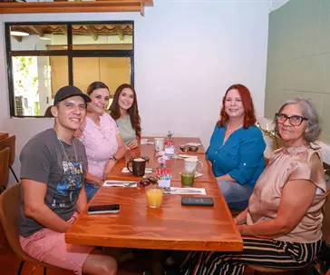
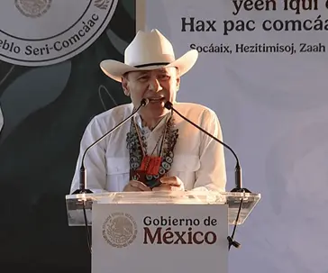
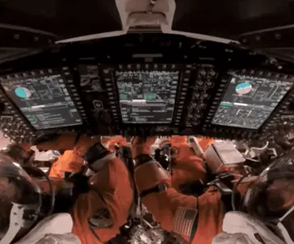

Columna
Lo que dice Mr. X: las decisiones que marcarán la semana
Entre Nos
Hoy · 4 min de lecturaColumnas, análisis y puntos de vista de articulistas y colaboradores de Expreso.
Una lectura de los acuerdos, desacuerdos y señales que atraviesan la vida política y social.
Por Redacción ExpresoEntre Nos
Hoy · 4 min de lectura
Pbro. José Martínez
Hoy · 4 min de lectura
Fuera de Ruta
Hoy · 4 min de lectura
El Asalto a la Razón
Hoy · 4 min de lectura
Actitudes
Hoy · 4 min de lectura
Serpientes y Escaleras
Hoy · 4 min de lecturaUna mirada contextual sobre los temas que generan conversación.
Expreso · Hoy · 4 minUna mirada contextual sobre los temas que generan conversación.
Expreso · Hoy · 4 minUna mirada contextual sobre los temas que generan conversación.
Expreso · Hoy · 4 minUna mirada contextual sobre los temas que generan conversación.
Expreso · Hoy · 4 min